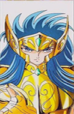

Selecione um cavaleiro
-

-

- 
mu
Mu é o Cavaleiro de Ouro de Áries. Hábil na restauração de Armaduras, é ele quem conserta as Armaduras de Bronze antes da Batalha das Doze Casas do Zodíaco. Como desde cedo desconfiava do Grande Mestre, deu as costas ao Santuário.